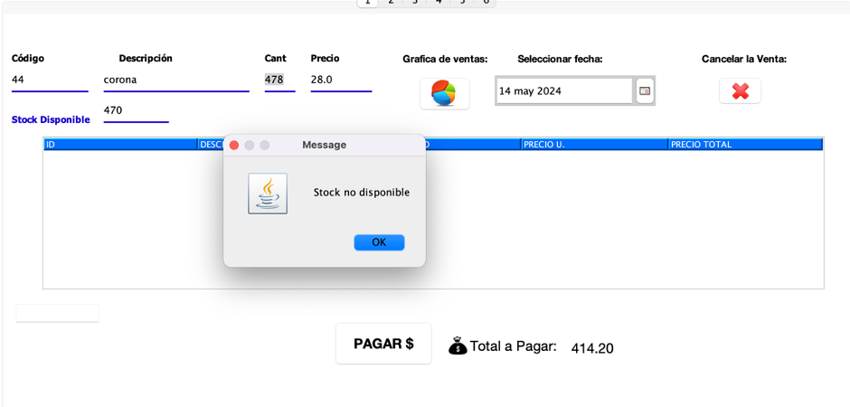
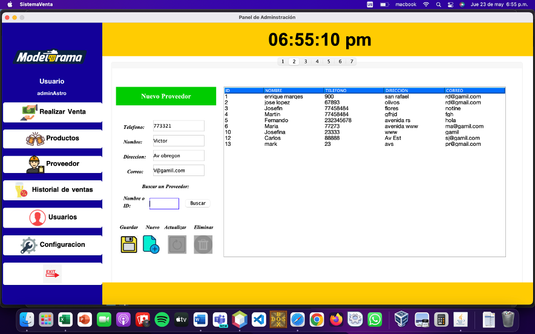
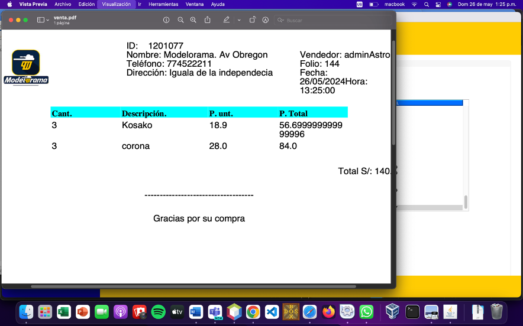
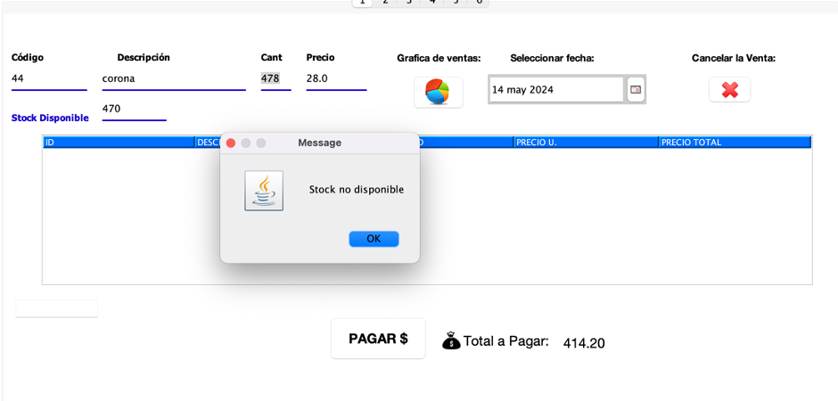
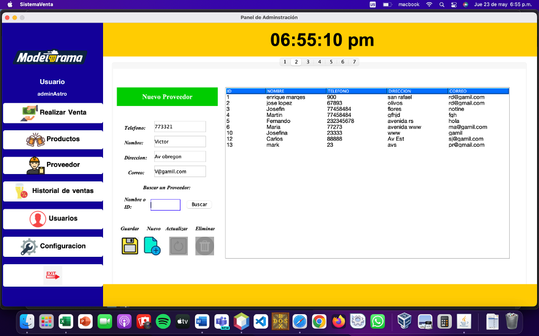
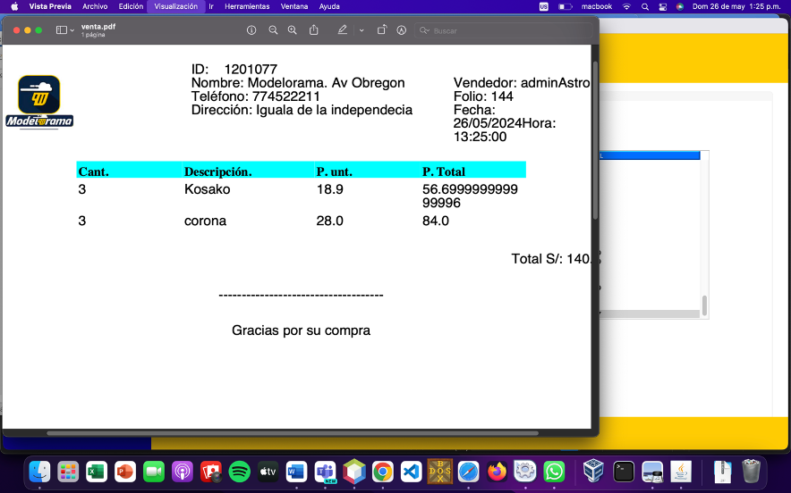

Portafolio
Desarrollo de Sistema Web – Tienda Virtual
Enero – Junio 2024Desarrollo de una aplicación web en Laravel, enfocada en la gestión de inventario de una tienda virtual. El sistema permitió controlar productos, entradas y salidas de stock, mejorando la eficiencia operativa.
 





Punto de Venta – Modelorama
Enero – Junio 2024Desarrollo de un sistema de punto de venta en Java, integrado con MariaDB. Permitió administrar inventario, ventas y productos, optimizando el control del negocio.
Sistema de Monitoreo – Rescate Canino
Agosto – Diciembre 2024Desarrollo de un sistema IoT con Arduino Cloud, sensores de temperatura, oxigenación y frecuencia cardíaca, permitiendo el monitoreo en tiempo real de perros de rescate durante operaciones de salvamento.
Sistema de Ventas – Web App
Enero – Marzo 2025Desarrollo de un sistema de ventas utilizando Vite + React y Supabase como backend, integrando autenticación y una base de datos relacional PostgreSQL.
Sistema Web Municipal – H. Ayuntamiento de Cocula
Agosto – Diciembre 2025Desarrollo de un sistema web institucional durante residencias profesionales, utilizando React, HTML y CSS, con backend en PHP y MySQL. Permitió la gestión de información municipal, atención ciudadana, chats y reportes.